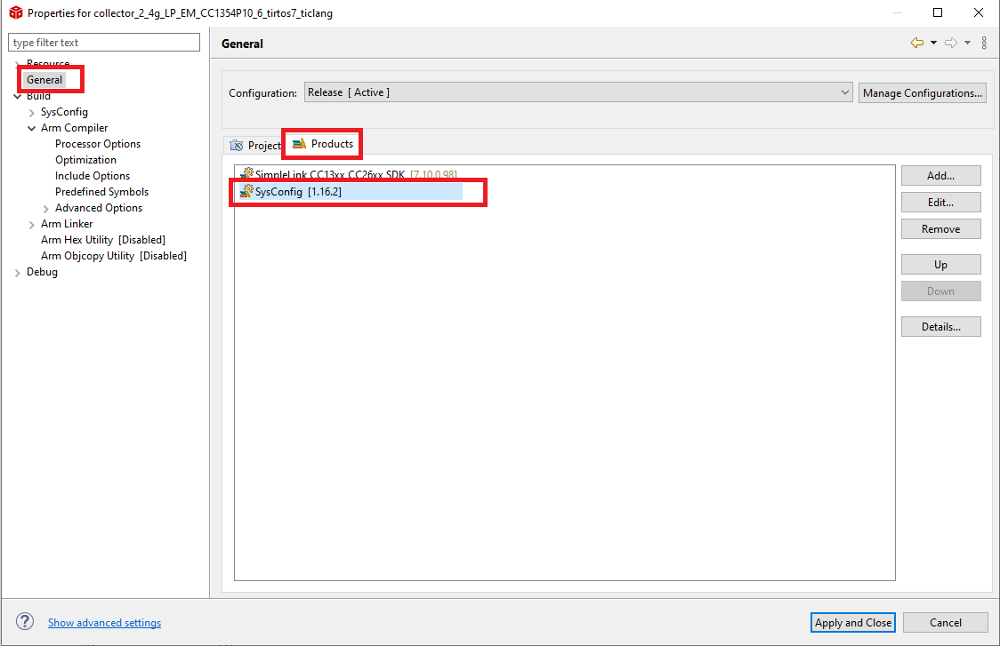
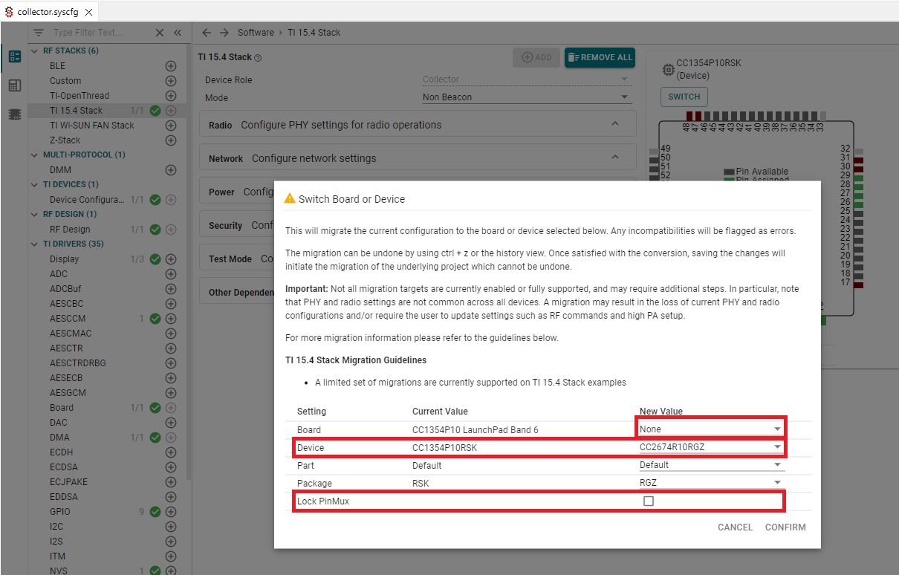

Running Software Examples on the CC13x4 or CC26x4¶
Software Examples for the CC13x4 or CC26x4¶
It is not currently possible to use the Hardware View tool to change the device types of projects using CC13x2x1 or CC26x2x1 to CC13x4 or CC26x4. Developers are strongly encouraged to import a project which contains the correct settings for their target device and port the stack application accordingly. Example projects can be found in the following location:
<SDK_DIR>\examples\rtos\<LaunchPad variant>\<stack>\<application>\tirtos\<ticlang/iar>
For LP-EM-CC1314R10, LP-EM-CC1354P10-1 and LP-EM-CC1354P10-6, software examples are provided in the SimpleLink CC13xx/CC26xx SDK.
If your product will use CC1354R10, CC2674R10 or CC2674P10, the recommendation is to start with a LP-EM-CC1354P10 software example.
Migrate Your CC13x2 or CC26x2 Project¶
This section will describe a way to migrate an existing project to the CC13x4 or CC26x4 device.
The best way to migrate is to open a new project from the new SDK and transfer your changes and application code over to the new example.
Choose the CC13x4 SDK example project that contains your target project’s base functionality or corresponds to your existing project.
Transfer the SysConfig settings. You can do this through the GUI, or open both the old and the new project
.syscfgfiles in a text comparison program and copy-paste the desired settings.Transfer all modified application files from your existing project into the CC13x4 example project. If applicable: delete application files that are not used from the CC13x4 example project.
You can find instructions on how to design and configure a custom board in the Custom Hardware chapter.
Specific Software Changes from CC13x2 and CC26x2 Projects¶
If your project has not been updated to the latest SDK, you may run into one or more of the following limitations:
Memory¶
The CC13x4 or CC26x4 devices contain 1M (1024KB) internal flash and 256KB RAM.
ROM¶
On CC13x4 or CC26x4 devices, there is no RTOS or connectivity stack in ROM. Instead, the RTOS and stacks are stored in flash. There are no required software changes.
PIN and GPIO Drivers¶
Legacy PIN drivers are not supported on CC13x4 or CC26x4 devices. Instead you should use the GPIO++ driver. For more information about GPIO++ driver, refer to the migration guide GPIO++ Driver Porting Guide
UART Driver¶
The legacy UART driver is not supported. Instead use the new UART2 driver. More information available in the UART to UART2 Porting Guide.
RTOS¶
CC13x4 or CC26x4 devices will only support TI-RTOS7 and FreeRTOS, not legacy TI-RTOS (also called RTOS6 or BIOS6). More information about TI-RTOS7 is available here: TI-RTOS to TI-RTOS7 Migration.
Migrate software examples from CC13x4 to CC26x4¶
This section provides the necessary steps to migrate an existing software example or project from a CC1354P10_x device to a CC26x4 device. This assumes you have imported a CC1354P10_x project into your CCS workspace.
To avoid confusion, it is advised to rename the project before proceeding with the porting effort. To rename the project, right click on the imported project, select the rename option and provide a new name for the project in the pop up.
Go to Project properties, in the predefined symbols section, change DeviceFamily_CC13X4 to DeviceFamily_CC26X4.
Make sure that the SysConfig product associated with the project is version 1.16.2 or later. This ensures that SysConfig has the metadata for your CC26x4 device.
Open the device view of SysConfig and click on the Switch option.
Select the required target device and select the board as ‘None’. Ensure that you have left the Lock PinMux selection unchecked. This is necessary because we still need to edit the pin mapping to fit our custom board design.

After clicking “Confirm”, SysConfig will perform best-effort device migration. Most settings will be correctly migrated, but sometimes (e.g. pin assignments to custom boards) SysConfig cannot select a good default for the new environment. In these cases, SysConfig will highlight settings that must be manually reviewed with warnings and/or errors. Some of these errors and warnings are illustrated below.
Caution
The following steps are provided for reference only. These are based on mounting a CC2674R10 device on a LP-CC2652R7 LaunchPad. You need to resolve the errors based on your own custom design.
If you are using either UART or Display
Make the UART PinMux selection as shown in the image.
If you are using Buttons/Leds
If you are using BTN-1 or BTN-2 on the board, make the following selection.
If you are using the Red LED or the Green LED. make the following selection.
If you are using the Button/LED driver from the TI DRIVER APPS section on SysConfig, you should make the PinMux selection in the Button or LED sub module.
If you are using the NVS driver
The chip select pins must be configured as shown in the figure
If you are using the SPI driver
The SPI pins must be configured as shown in the figure
If you are using MCUBoot and Bootloader Backdoor
Configure the bootloader backdoor and address of the flash vector table as shown in the picture.
If you are using RF stacks/Proprietary RF
The RF Design and the XOSC configuration must have the following selections irrespective of the wireless stack or custom Phy used.
In the RF design module, you need to “accept” the changes by clicking on “accepting” in the error message. Select “Not used” for the Sub-1GHz Frequency Band, the CC2674x is a 2.4G only device.
It is also important to un-check the XOSC Cap Array Modification option in Device Configuration module. If you do not uncheck this, there is an unwanted offset added to the center frequency.
If you are using a custom Phy (IEEE 802.15.4 Phy)
Under Custom Phy selection, click on here in the messages to dismiss the errors. These error arise from migrating a dual band(2.4G and Sub1G device) to an exclusively 2.4GHz device. We will resolve the errors manually in the following steps.
Manually update the RF Command Symbol generated for the CMD_RADIO_SETUP by adding the ieee154 suffix.
Regarding antenna switching
The CC1354P10_x device is a dual band device and also has an additional high PA path, while CC26x4R devices are single band devices (i.e. only have a single RF path at its output). Thus, it does not require an antenna switch. In the RF module of SysConfig, you need to reduce the number of antenna switch control pins to 0.
But please note that if you are migrating to a CC2674P10 device, due to the presence of an additional high PA RF path, you might need an antenna switch and you would have to implement an antenna switching callback to control this antenna switch at the application level.
For reference implementation, you can check the antenna switching callback found in ti_drivers_config.c in any prop_rf examples for LP_CC1354P10_x.